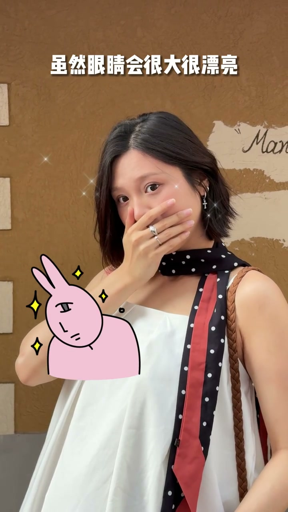

内容要点
[00:00] 想拍出这种超有感人力的
[00:01] 妈生感笑容
[00:02] 对于普通人来说
[00:03] 简直太难了
[00:05] 就这么说吧
[00:06] 10个来找我学表情管理的
[00:08] 10个都是拍成这样的
[00:09] 要不就是这样的
[00:11] 作为老师
[00:11] 我实在看不下去了
[00:12] 所以我决定
[00:13] 今天不抢这页子了
[00:14] 直接把我刻上专门针对普通人
[00:17] 学拍照而设计的大笑作弊法
[00:19] 拿出来给你学
[00:20] 这些可都是我零基础的学员啊
[00:22] 新手绝对友好
[00:23] 我教一步
[00:24] 你学一步
[00:26] 大笑作弊法
[00:26] 第一着
[00:27] 奸笑不好看
[00:28] 那就干脆挡起来
[00:30] 首先撬起你的食指
[00:32] 再把食指轻轻的盖住你的鼻头处
[00:34] 让指尖稍稍超过鼻头
[00:36] 大概两到三公分左右
[00:38] 哪怕是笑得再烈再尴尬
[00:40] 反正挡在里面
[00:42] 也是看不到的
[00:43] 只要注意
[00:43] 别挡太高就可以了
[00:45] 弱化了嘴巴的存在
[00:46] 那视觉中心
[00:47] 就会转移到眼睛上
[00:49] 如果这时
[00:50] 眼睛还是跟着大大圆圆的
[00:51] 虽然眼睛会很大很漂亮
[00:53] 但感染力全无
[00:55] 所以这事
[00:56] 就需要借助到我们
[00:57] 下眼检的收缩力
[00:59] 这种感觉有点类似于
[01:00] 女生在化卧残时
[01:01] 眼睛被挤压的感觉
[01:03] 眼睛一弯
[01:04] 浓浓的效益
[01:05] 就从眼睛里偷出来了
[01:07] 氛围的
[01:07] 它不就来了吗
[01:09] 如果你实在学不来
[01:11] 下眼检用力
[01:12] 你可以试试这样
[01:13] 把眼睛闭起来
[01:14] 再用力去皱鼻子
[01:16] 就像这样
[01:20] 虽然五官会被挤成一团
[01:21] 但这份感染力
[01:23] 绝对无敌了
[01:24] 意思上有很多排大笑氛围感的博主
[01:26] 用的就是这张
[01:28] 大笑作弊法第二招
[01:29] 假如氛围不够
[01:31] 就用头发来凑
[01:32] 众所周知
[01:33] 一个人在极度开心的时候
[01:35] 常常会笑得前仰厚和东岛系外
[01:38] 头发也会跟着甩来甩去的
[01:40] 反过来说
[01:41] 当我们身体呈现出一种
[01:42] 倾斜状态
[01:44] 而非直立状态时
[01:46] 头发是悬空的
[01:47] 而不是紧紧的贴在身上
[01:49] 那从视觉上
[01:50] 就会传递给镜头
[01:51] 一种强烈的快乐情绪
[01:53] 大笑的感染力
[01:54] 就会被瞬间拉满
[01:56] 虽然吧
[01:57] 头发偶尔会被拍的有些领乱
[01:59] 但这恰恰又是活人感的关键
[02:02] 大笑作弊法第三招
[02:04] 如果笑不自然
[02:05] 那就让笑自然发现
[02:07] 你可以故意做点让自己尴尬到不行
[02:09] 甚至有些杀雕的行为
[02:11] 或者跳一段非常尴尬的舞蹈
[02:14] 我敢打赌
[02:14] 没人能坚持到30秒
[02:16] 肯定崩不住了
[02:18] 你可以自己跟自己聊天
[02:19] 嘴巴里去督闹一些搞笑的
[02:20] 或者服他的台词
[02:22] 哈哈哈哈哈
[02:23] 大概是个仙女吧
[02:24] 哈哈哈哈
[02:25] 周围的人大概觉得我是个疯子吧
[02:28] 反正挡着嘴巴啥也看不到
[02:30] 就尽管放任自己发疯好了
[02:32] 初遍才是一道理
